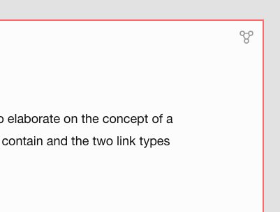
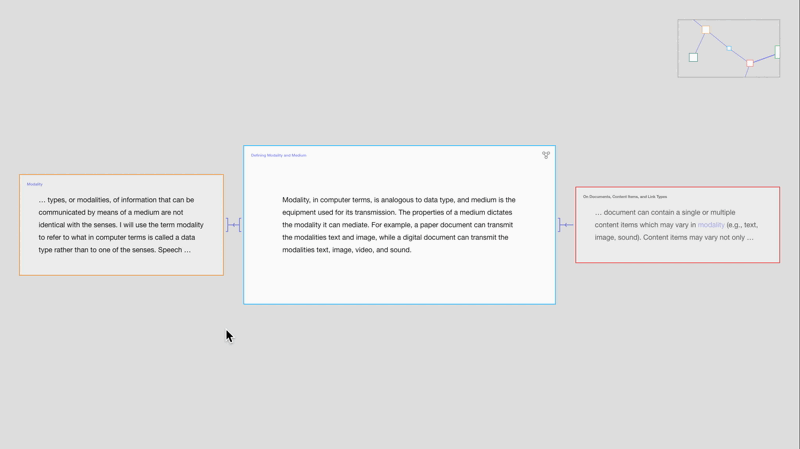
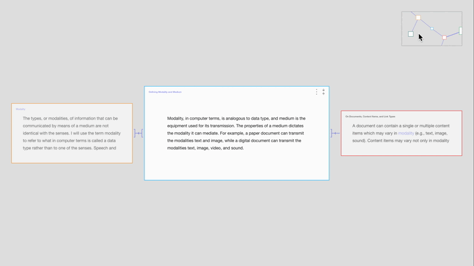
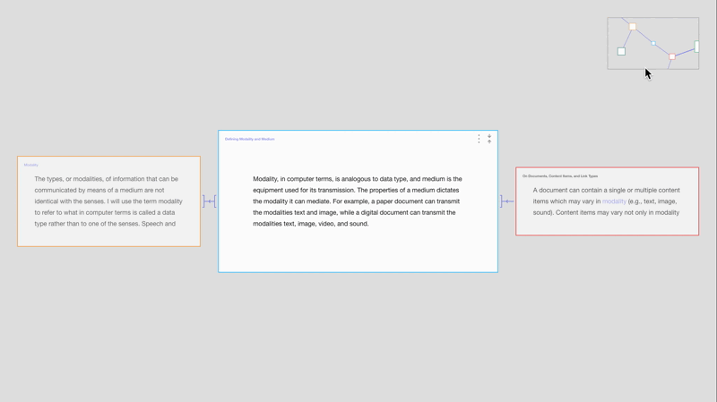

Prototype: How to Switch View Modes and Traverse Documents (Round 05)
Alterations and additions:
- Added a location frame, showing Zoomed-Out View while in Zoomed-In View.
- Minimize icon is replaced by a node-link icon, triggering the movement from Zoomed-In View to Zoomed-Out View.
- Aliases no longer have expand icons but use brightness to indicate that it can be triggered to open the linked document.
Switching View Modes
The expand icon is replaced with a node-link icon, which triggers the movement from Zoomed-In View to Zoomed-Out View.



Traversing Documents in Zoomed-In View Using the Location Frame

Redesign of Aliases
The expand icons are removed, and now the brightness and change of cursor indicate that clicking an alias will open the linked document. The ellipsis indicates that the aliases only reveal part of the linked document.

Interactive Prototype
Traverse documents in the interactive prototype below.
Improvements Due
- In Zoomed-In View:
- Hovering a preview should bring that preview to the front.
- Hovering linked text (or preview) should result in active-color linked text.
- Visualization of multiple links to/from the same content item.
- Filter menu
The next entry further explores the design of the view modes and links.
Discarded Attempts
Location Frame Transitions

